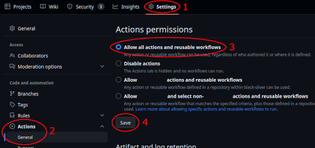

Contributing¶
All contributions are welcome, though we have a few requests of contributors, whether they be for core, webhost, or new game contributions:
Follow styling guidelines. Please take a look at the code style documentation to ensure ease of communication and uniformity.
Ensure that critical changes are covered by tests. It is strongly recommended that unit tests are used to avoid regression and to ensure everything is still working. If you wish to contribute by adding a new game, please take a look at the logic unit test documentation. If you wish to contribute to the website, please take a look at these tests.
Do not introduce unit test failures/regressions. Archipelago supports multiple versions of Python. You may need to download older Python versions to fully test your changes. Currently, the oldest supported version is Python 3.10. It is recommended that automated github actions are turned on in your fork to have github run unit tests after pushing. You can turn them on here:

When reviewing PRs, please leave a message about what was done. We don’t have full test coverage, so manual testing can help. For code changes that could affect multiple worlds or that could have changes in unexpected code paths, manual testing or checking if all code paths are covered by automated tests is desired. The original author may not have been able to test all possibly affected worlds, or didn’t know it would affect another world. In such cases, it is helpful to state which games or settings were rolled, if any. Please also tell us if you looked at code, just did functional testing, did both, or did neither. If testing the PR depends on other PRs, please state what you merged into what for testing. We cannot determine what “LGTM” means without additional context, so that should not be the norm.
Other than these requests, we tend to judge code on a case-by-case basis.
For contribution to the website, please refer to the WebHost README.
If you want to contribute to the core, you will be subject to stricter review on your pull requests. It is recommended that you get in touch with other core maintainers via the Discord.
If you want to add Archipelago support for a new game, please take a look at the adding games documentation which details what is required to implement support for a game, and has tips on to get started. If you want to merge a new game into the main Archipelago repo, please make sure to read the responsibilities as a world maintainer.
For other questions, feel free to explore the main documentation folder, and ask us questions in the #ap-world-dev channel of the Discord.